6' 7" · A stitched-together gentle giant of indeterminate age who sings slow sentimental ballads with total sincerity; the roster's tallest figure. Very tall, heavy-shouldered and long-armed with large square hands, a flat-topped rectangular head and a stiff, deliberate, upright bearing; never hunched, shambling, lurching or menacing. His recognition cues are a tall flat-topped rectangular head with a heavy brow ridge, short blunt black hair cut straight across the forehead, grey-green skin, a neat stitched seam across the forehead and one around the character-left wrist, two small metal electrode studs on the sides of the neck, a too-short dark coat with sleeves ending above the wrists, and heavy thick-soled boots, all readable without facial detail. The seams are clean dark stitch lines, never wounds. No hat or headwear. He wears a worn charcoal suit coat one size too small, sleeves ending short of the wrists, over a dull olive shirt buttoned to the collar, dark trousers ending above the ankles, and very heavy black boots with thick raised soles. He holds one wireless handheld microphone carefully upright in his large character-right hand, gripped gently between thumb and fingers; no cord, no stand. His ready stance is tall and square, feet planted a little apart, knees nearly straight, shoulders level, the free character-left hand held open and slightly away from the body, and a hopeful, earnest expression. Palette, as base/shadow/highlight per material: dark #20232B / #101217 / #3A3E48; charcoal #3C3F45 / #1E2023 / #62666E; olive shirt #5F6640 / #353A22 / #8A9262; skin #7F9A7A / #4B5E48 / #A9C2A2; hair #1B1A1E / #0B0B0D / #434148; stitches #2A2D2A / #151715 / #4A4E4A; metal #6F747C / #34383E / #B5BAC0; eye white #E9E6D6; eye dark #1B1A1E; lip #4E5B4B. Never draw: blood, gore, open wounds, exposed bone or surgical detail; a snarling or menacing face; arms stretched straight out in front in a zombie walk; a hunched, shambling or lurching posture; torches, pitchforks or lab equipment; bolts larger than small studs; any real actor's likeness or any film's makeup design; the microphone in the character-left hand; a microphone cord, stand or duplicate microphone; logos, text or real brands.
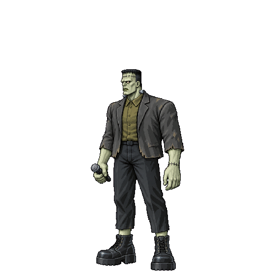
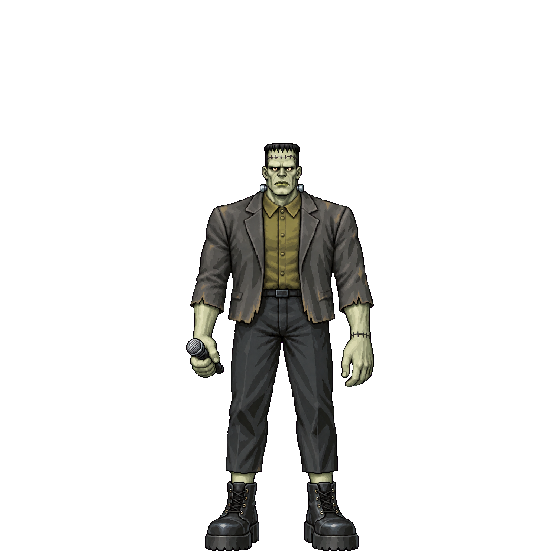
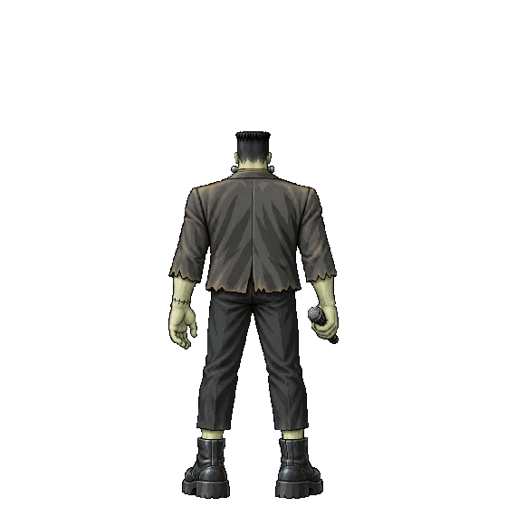
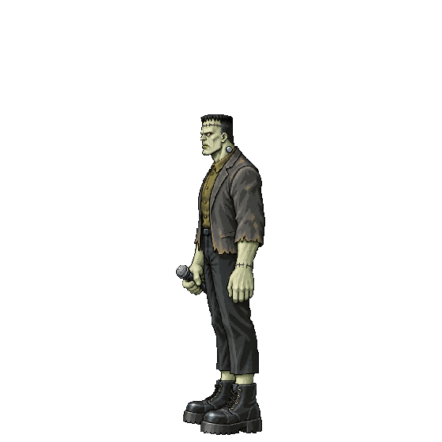
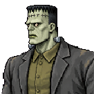
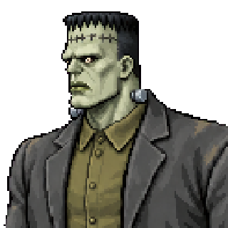
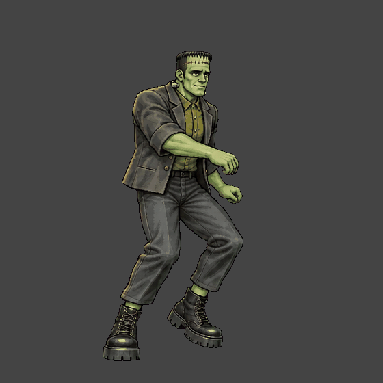
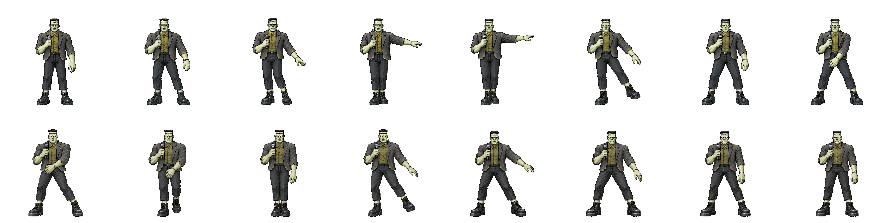
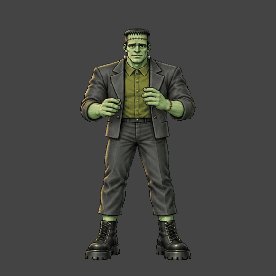
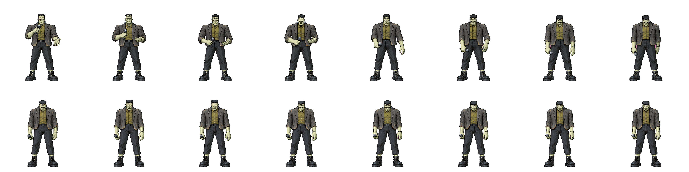
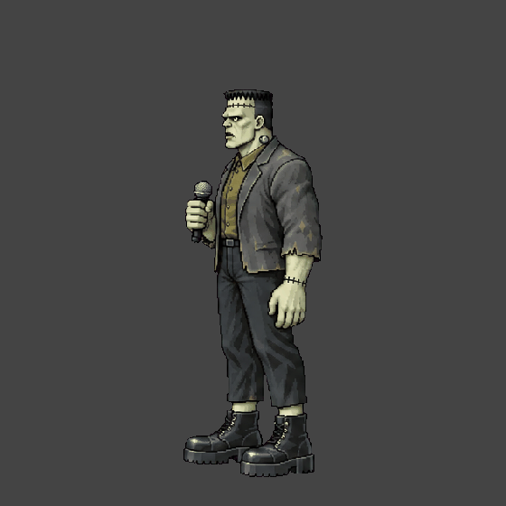
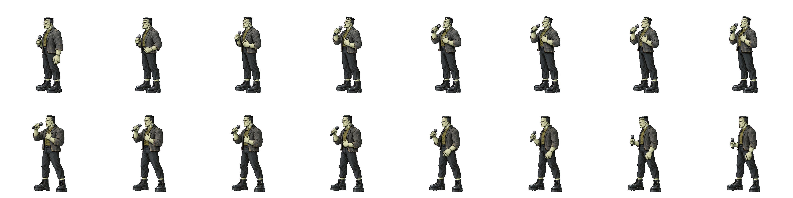
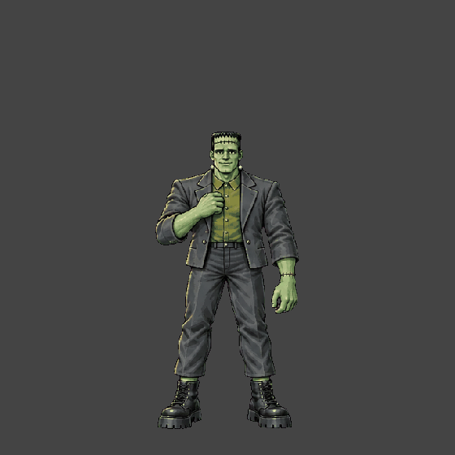
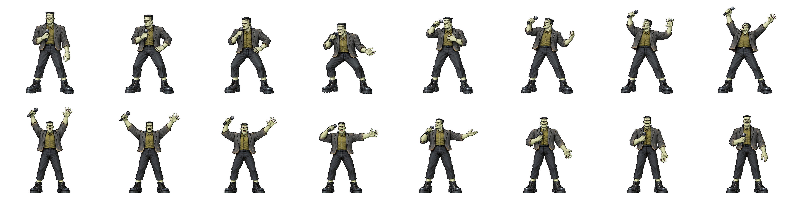